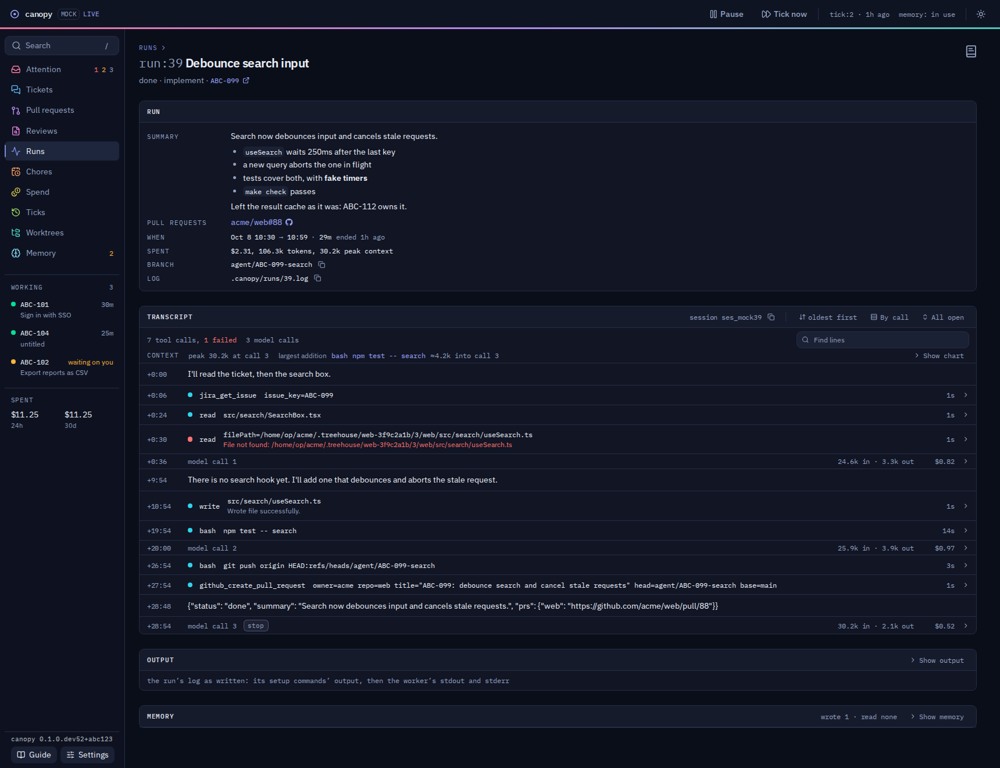

01 · Where we are
Today’s Run 39 page

1
The summary block is good: what it did, in its own words, then the facts.
2
The transcript has six controls before its first line: session, order, by call, all open, find, show chart.
3
Output and Memory are folds that read as two more panels.
From ui/e2e/screenshots.spec.ts-snapshots/, the mock journal, dark.